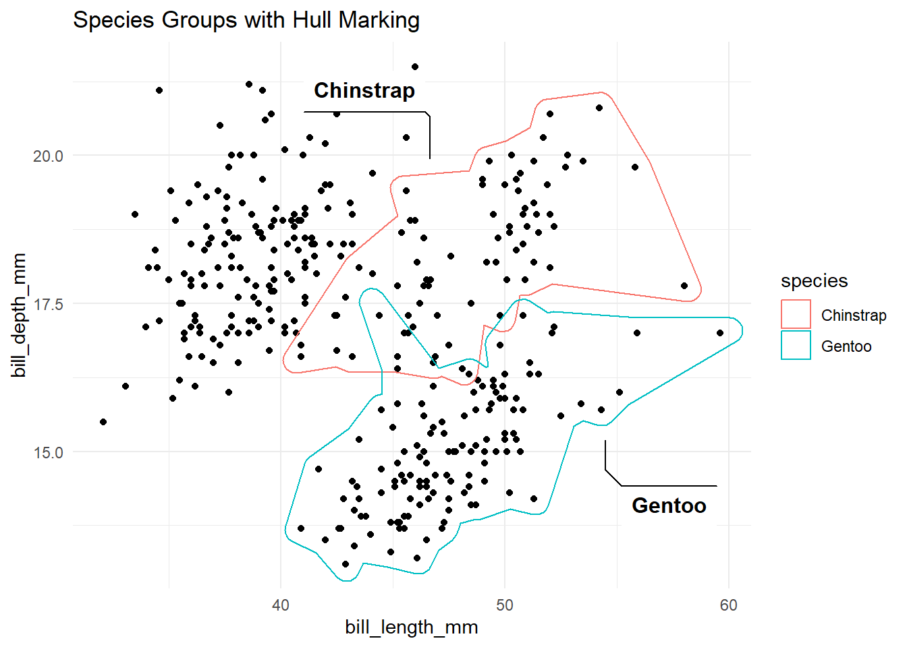
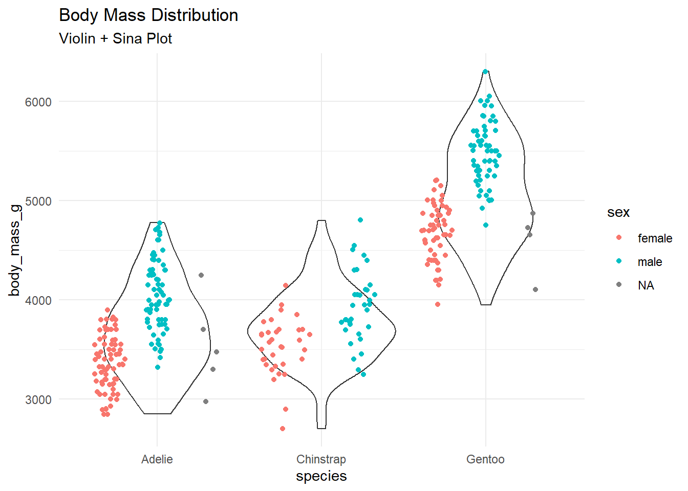
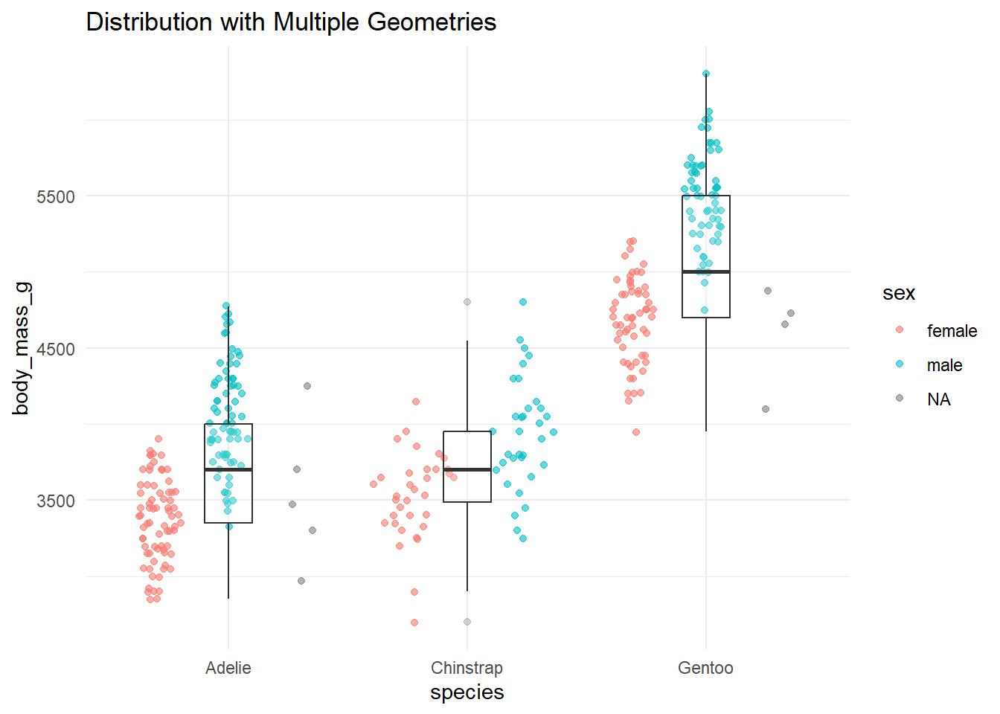

Show the code
library(tidyverse)
library(ggforce)
library(palmerpenguins)
library(concaveman)
theme_set(theme_minimal())ggforce extends ggplot2 with advanced geometries for specialized visualizations. This guide explores these powerful additions.
library(tidyverse)
library(ggforce)
library(palmerpenguins)
library(concaveman)
theme_set(theme_minimal())# Create data for arcs
arc_data <- tibble(
start = seq(0, 2*pi, length.out = 4),
end = lead(start, default = 2*pi),
r = rep(2:3, each = 2),
value = 1:4
)
# Basic arc plot
ggplot(arc_data) +
geom_arc_bar(aes(
x0 = 0, y0 = 0,
r0 = r-0.5, r = r,
start = start, end = end,
fill = factor(value)
)) +
coord_fixed() +
labs(title = "Arc Bars") +
theme_void()# Animated circle segments
angles <- seq(0, 2*pi, length.out = 20)
circle_data <- tibble(
start = angles,
end = lead(angles, default = first(angles)),
group = rep(1:4, each = 5)
)
ggplot(circle_data) +
geom_arc(aes(
x0 = 0, y0 = 0,
r = group,
start = start, end = end,
color = factor(group)
)) +
coord_fixed() +
theme_void()# Create data for circles
circle_data <- tibble(
x0 = rep(1:3, each = 2),
y0 = rep(1:2, 3),
r = seq(0.3, 0.8, length.out = 6)
)
# Circles with different sizes
ggplot(circle_data) +
geom_circle(aes(x0 = x0, y0 = y0, r = r, fill = r)) +
coord_fixed() +
scale_fill_viridis_c() +
theme_minimal() +
labs(title = "Circles with Varying Radii")# Regular polygons
polygon_data <- tibble(
x0 = rep(1:3, each = 2),
y0 = rep(1:2, 3),
sides = 3:8
)
ggplot(polygon_data) +
geom_regon(aes(x0 = x0, y0 = y0, sides = sides, r = 0.4, angle = 0,
fill = factor(sides))) +
coord_fixed() +
theme_minimal() +
labs(title = "Regular Polygons",
fill = "Number of sides")# Mark interesting groups
ggplot(penguins, aes(bill_length_mm, bill_depth_mm)) +
geom_point() +
geom_mark_hull(aes(
color = species,
label = species,
filter = species != "Adelie"
),
expand = unit(3, "mm")) +
labs(title = "Species Groups with Hull Marking")
# Ellipse marking with labels
ggplot(penguins, aes(bill_length_mm, bill_depth_mm)) +
geom_point() +
geom_mark_ellipse(aes(
color = species,
label = species,
description = paste("Mean mass:", round(mean(body_mass_g, na.rm = TRUE)), "g")
)) +
labs(title = "Species Groups with Ellipse Marking") +
theme_minimal()# Rectangular highlights
ggplot(penguins, aes(bill_length_mm, bill_depth_mm)) +
geom_point() +
geom_mark_rect(aes(
filter = species == "Gentoo",
label = "Gentoo",
description = "Largest species"
)) +
labs(title = "Rectangular Highlight")# Circular highlights
ggplot(penguins, aes(bill_length_mm, bill_depth_mm)) +
geom_point() +
geom_mark_circle(aes(
group = species,
label = species
),
label.buffer = unit(10, "mm")) +
labs(title = "Circular Species Groups") 
# Create parallel sets visualization
penguins %>%
gather_set_data(c(species, island, sex)) %>%
group_by(species, island, sex) %>%
mutate(value = n()) %>%
ggplot(aes(x = x, id = id, split = y, value = value)) +
geom_parallel_sets(aes(fill = species)) +
geom_parallel_sets_axes(axis.width = 0.1) +
geom_parallel_sets_labels(angle = 0) +
labs(title = "Penguin Characteristics",
subtitle = "Parallel Sets Visualization") +
theme_minimal()# Basic sina plot
ggplot(penguins, aes(species, body_mass_g)) +
geom_sina(aes(color = species)) +
labs(title = "Distribution of Body Mass",
subtitle = "Sina Plot")# Combined with violin plot
ggplot(penguins, aes(species, body_mass_g)) +
geom_violin(alpha = 0.3) +
geom_sina(aes(color = sex)) +
labs(title = "Body Mass Distribution",
subtitle = "Violin + Sina Plot")
# Zoom in on specific region
ggplot(penguins, aes(bill_length_mm, bill_depth_mm, color = species)) +
geom_point() +
facet_zoom(x = species == "Gentoo") +
labs(title = "Bill Dimensions with Zoom on Gentoo")# Multiple zoom levels
ggplot(penguins, aes(bill_length_mm, bill_depth_mm, color = species)) +
geom_point() +
facet_zoom(xy = body_mass_g > 5000) +
labs(title = "Bill Dimensions",
subtitle = "Zoomed on Heavy Penguins")# Create data for links
link_data <- tibble(
x = c(1, 2, 3),
y = c(1, 2, 1),
xend = c(2, 3, 1),
yend = c(2, 1, 1)
)
# Basic links
ggplot(link_data) +
geom_link(aes(
x = x, y = y,
xend = xend, yend = yend,
alpha = stat(index)
)) +
labs(title = "Basic Links")# Create bezier curve data
bezier_data <- tibble(
x = c(1, 2, 3, 4),
y = c(1, 3, 2, 4),
group = 1
)
# Simple bezier curve
ggplot(bezier_data, aes(x, y, group = group)) +
geom_bezier() +
labs(title = "Simple Bezier Curve")# Multiple bezier curves
bezier_data2 <- bind_rows(
bezier_data,
bezier_data %>% mutate(y = y + 2, group = 2)
)
ggplot(bezier_data2, aes(x, y, group = group, color = factor(group))) +
geom_bezier() +
labs(title = "Multiple Bezier Curves")
# Combine mark geometries with points
ggplot(penguins, aes(bill_length_mm, bill_depth_mm)) +
geom_point(alpha = 0.5) +
geom_mark_ellipse(
aes(filter = species == "Gentoo",
label = "Gentoo",
description = "Largest species"),
label.buffer = unit(10, "mm")
) +
labs(title = "Highlighting with Context")# Combine multiple specialized geometries
ggplot(penguins, aes(bill_length_mm, bill_depth_mm)) +
geom_point(alpha = 0.5) +
geom_mark_hull(aes(color = species, fill = species),
alpha = 0.2) +
facet_zoom(x = bill_length_mm > 50) +
labs(title = "Multi-layer Visualization")# Use sina plots for distribution visualization
ggplot(penguins, aes(species, body_mass_g)) +
geom_sina(aes(color = sex), alpha = 0.6) +
geom_boxplot(width = 0.2, alpha = 0.2) +
labs(title = "Distribution with Multiple Geometries")
coord_fixed() with circular geometries